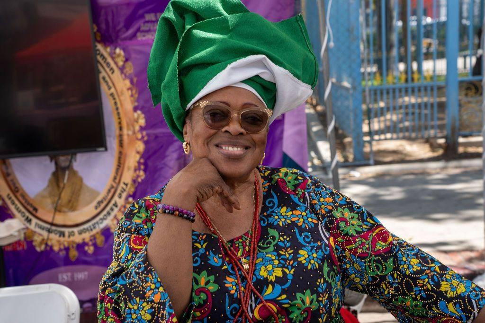
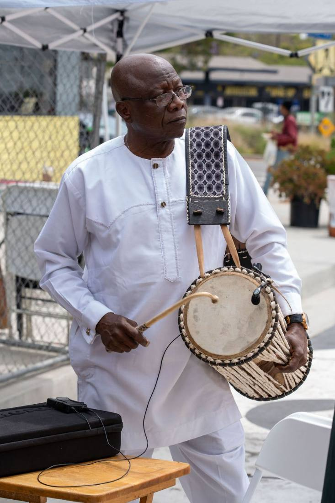

The market
Ọjà Balógun
Forty vendors along Degnan: jollof and suya, aṣọ òkè by the yard, books, soap, and beads. It opens at half past eleven and does not stop.
A day of Yoruba culture at Leimert Park Plaza, held each June. Four zones, one village, open to everyone.
Saturday 12 June 2027 • 11am to 7pm • Free entry
A day of Yoruba culture at Leimert Park Plaza, held each June. Four zones, one village, open to everyone.
Saturday 12 June 2027 • 11am to 7pm • Free entry
Odunde marks the Yoruba new year. It has been held in June at Leimert Park Plaza since 2003, and it is open to the whole neighborhood, not only to Yoruba families. The plaza is laid out as a village for the day, with four zones and a program that runs from the opening procession at eleven to the last drum at seven.
If you have never been: this sits alongside Lunar New Year, Diwali, and Nowruz. Communities that pause the world for a day to celebrate who they are, in public, with their neighbours, and with anyone who wants to come and eat.
The plaza is divided the way a Yoruba town is divided. Each zone has its own name, its own people, and its own reason to stand there all day. The blocks below sit roughly as they do on the ground: the market runs the length of Degnan, everything else gathers around it.
Forty vendors along Degnan: jollof and suya, aṣọ òkè by the yard, books, soap, and beads. It opens at half past eleven and does not stop.

Ayo boards, adire dyeing, drumming lessons, and a shaded tent where a tired child can rest with someone who knows their name.

Where the day is opened and blessed. Seating in shade, the welcome at two, and the elders who can still tell you which town your surname comes from.

Talking drums, bàtá, and the main stage. Performances run from four, and anyone who wants to try a dùndún can.
Enough for a family to decide when to arrive and what not to miss. Times are confirmed each spring.
Drummers lead the walk from Degnan into the plaza and the day is declared open.
Forty stalls: food, cloth, craft, and books.
Ayo, adire dyeing, and a first drumming lesson.
The formal greeting, and the naming of families who have travelled.
Learners from the online lessons, youngest first, saying what they have learned this year.
Bàtá, dance groups, and guest artists. Program confirmed each May.
Everyone on their feet, and the plaza handed back at seven.
Everything you need on the day, from getting there to what to bring.
Four ways in. Each one says what it asks of you, then opens a short form.
Standard booth $150, double $275, food truck $325. Applications close 1 April, decisions by 20 April, and a booth is held once the fee is paid.
Three levels from $2,500 to $10,000. Four questions, and the deck with our impact numbers arrives within a working day.
The main stage runs from four. Five questions, and the program committee decides in March.
Set-up from seven, shifts of three hours, and a shirt that makes you findable. We place you where the gap is.
Four thousand two hundred people came through the plaza in June 2026, our largest day yet.
The day is free and open because these organizations help pay for it.